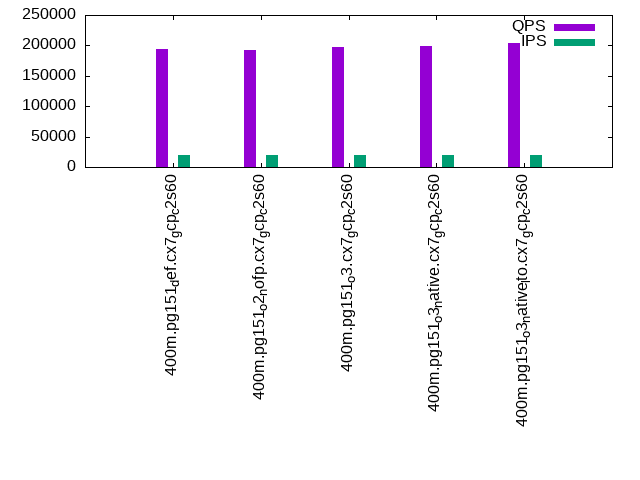

This is a report for the insert benchmark with 400M docs and 20 client(s). It is generated by scripts (bash, awk, sed) and Tufte might not be impressed. An overview of the insert benchmark is here and a short update is here. Below, by DBMS, I mean DBMS+version.config. An example is my8020.c10b40 where my means MySQL, 8020 is version 8.0.20 and c10b40 is the name for the configuration file.
The test server is a c2-standard-60 from GCP with 30 cores, hyperthreading disabled, 240G RAM and 3T from XFS and SW RAID 0 striped over 8 local NVMe drives. The benchmark was run with 20 clients and there were 1 or 2 connections per client (1 for queries, 1 for inserts). The benchmark loads 400M rows without secondary indexes, creates secondary indexes, loads another 400M rows then does 3 read+write tests for one hour each that do queries as fast as possible with 100, 500 and then 1000 writes/second/client concurrent with the queries. Each read-write test runs for 1800 seconds. The test was configured to use one table. The database is cached by the storage engine and the only IO is for writes. Clients and the DBMS share one server. The per-database configs are in the per-database subdirectories here.
The tested DBMS are:
The numbers are inserts/s for l.i0 and l.i1, indexed docs (or rows) /s for l.x and queries/s for q*.2. The values are the average rate over the entire test for inserts (IPS) and queries (QPS). The range of values for IPS and QPS is split into 3 parts: bottom 25%, middle 50%, top 25%. Values in the bottom 25% have a red background, values in the top 25% have a green background and values in the middle have no color. A gray background is used for values that can be ignored because the DBMS did not sustain the target insert rate. Red backgrounds are not used when the minimum value is within 80% of the max value.
| dbms | l.i0 | l.x | l.i1 | q100.1 | q500.1 | q1000.1 |
|---|---|---|---|---|---|---|
| 400m.pg151_def.cx7_gcp_c2s60 | 1081081 | 319059 | 393314 | 189264 | 191126 | 194731 |
| 400m.pg151_o2_nofp.cx7_gcp_c2s60 | 1033592 | 311604 | 374532 | 186206 | 188322 | 192800 |
| 400m.pg151_o3.cx7_gcp_c2s60 | 1095890 | 325549 | 390625 | 190229 | 192018 | 196728 |
| 400m.pg151_o3_native.cx7_gcp_c2s60 | 1075269 | 333695 | 384986 | 192928 | 193866 | 198737 |
| 400m.pg151_o3_native_lto.cx7_gcp_c2s60 | 1114206 | 328220 | 396040 | 197884 | 198355 | 203902 |
This lists the average rate of inserts/s for the tests that do inserts concurrent with queries. For such tests the query rate is listed in the table above. The read+write tests are setup so that the insert rate should match the target rate every second. Cells that are not at least 95% of the target have a red background to indicate a failure to satisfy the target.
| dbms | q100.1 | q500.1 | q1000.1 |
|---|---|---|---|
| pg151_def.cx7_gcp_c2s60 | 1976 | 9885 | 19769 |
| pg151_o2_nofp.cx7_gcp_c2s60 | 1976 | 9885 | 19769 |
| pg151_o3.cx7_gcp_c2s60 | 1976 | 9885 | 19769 |
| pg151_o3_native.cx7_gcp_c2s60 | 1977 | 9885 | 19769 |
| pg151_o3_native_lto.cx7_gcp_c2s60 | 1976 | 9885 | 19769 |
| target | 2000 | 10000 | 20000 |
l.i0: load without secondary indexes. Graphs for performance per 1-second interval are here.
Average throughput:
Insert response time histogram: each cell has the percentage of responses that take <= the time in the header and max is the max response time in seconds. For the max column values in the top 25% of the range have a red background and in the bottom 25% of the range have a green background. The red background is not used when the min value is within 80% of the max value.
| dbms | 256us | 1ms | 4ms | 16ms | 64ms | 256ms | 1s | 4s | 16s | gt | max |
|---|---|---|---|---|---|---|---|---|---|---|---|
| pg151_def.cx7_gcp_c2s60 | 18.967 | 77.759 | 3.213 | 0.020 | 0.026 | 0.016 | 0.608 | ||||
| pg151_o2_nofp.cx7_gcp_c2s60 | 14.277 | 81.859 | 3.804 | 0.021 | 0.022 | 0.016 | 0.980 | ||||
| pg151_o3.cx7_gcp_c2s60 | 20.514 | 76.301 | 3.130 | 0.017 | 0.026 | 0.012 | 0.876 | ||||
| pg151_o3_native.cx7_gcp_c2s60 | 20.860 | 75.612 | 3.474 | 0.014 | 0.026 | 0.014 | 0.001 | 1.306 | |||
| pg151_o3_native_lto.cx7_gcp_c2s60 | 27.644 | 69.081 | 3.222 | 0.012 | 0.028 | 0.013 | 0.984 |
Performance metrics for the DBMS listed above. Some are normalized by throughput, others are not. Legend for results is here.
ips qps rps rmbps wps wmbps rpq rkbpq wpi wkbpi csps cpups cspq cpupq dbgb1 dbgb2 rss maxop p50 p99 tag 1081081 0 0 0.0 1722.9 421.2 0.000 0.000 0.002 0.399 311160 57.7 0.288 16 43.0 116.0 NA 0.608 60425 13984 400m.pg151_def.cx7_gcp_c2s60 1033592 0 0 0.0 1685.4 413.4 0.000 0.000 0.002 0.410 327875 57.2 0.317 17 43.0 117.4 NA 0.980 57560 12087 400m.pg151_o2_nofp.cx7_gcp_c2s60 1095890 0 0 0.0 1720.8 419.5 0.000 0.000 0.002 0.392 301972 57.8 0.276 16 43.0 115.2 NA 0.876 60656 10588 400m.pg151_o3.cx7_gcp_c2s60 1075269 0 0 0.0 1654.6 415.2 0.000 0.000 0.002 0.395 324102 57.2 0.301 16 43.0 116.3 NA 1.306 59657 9789 400m.pg151_o3_native.cx7_gcp_c2s60 1114206 0 0 0.0 1707.0 419.3 0.000 0.000 0.002 0.385 328361 56.9 0.295 15 43.0 113.7 NA 0.984 61933 11287 400m.pg151_o3_native_lto.cx7_gcp_c2s60
l.x: create secondary indexes.
Average throughput:
Performance metrics for the DBMS listed above. Some are normalized by throughput, others are not. Legend for results is here.
ips qps rps rmbps wps wmbps rpq rkbpq wpi wkbpi csps cpups cspq cpupq dbgb1 dbgb2 rss maxop p50 p99 tag 319059 0 2274 14.2 412.2 94.4 0.007 0.045 0.001 0.303 1224 3.0 0.004 3 78.3 152.0 0.0 0.031 NA NA 400m.pg151_def.cx7_gcp_c2s60 311604 0 1584 15.8 401.9 97.5 0.005 0.052 0.001 0.320 988 3.0 0.003 3 78.3 152.6 0.0 0.002 NA NA 400m.pg151_o2_nofp.cx7_gcp_c2s60 325549 0 2137 15.1 448.9 106.7 0.007 0.048 0.001 0.335 876 3.1 0.003 3 78.3 152.2 0.0 0.016 NA NA 400m.pg151_o3.cx7_gcp_c2s60 333695 0 2739 16.1 436.9 102.3 0.008 0.049 0.001 0.314 1028 3.0 0.003 3 78.3 152.5 0.0 0.028 NA NA 400m.pg151_o3_native.cx7_gcp_c2s60 328220 0 2422 15.3 450.2 105.2 0.007 0.048 0.001 0.328 1397 3.1 0.004 3 78.3 152.2 0.0 0.011 NA NA 400m.pg151_o3_native_lto.cx7_gcp_c2s60
l.i1: continue load after secondary indexes created. Graphs for performance per 1-second interval are here.
Average throughput:
Insert response time histogram: each cell has the percentage of responses that take <= the time in the header and max is the max response time in seconds. For the max column values in the top 25% of the range have a red background and in the bottom 25% of the range have a green background. The red background is not used when the min value is within 80% of the max value.
| dbms | 256us | 1ms | 4ms | 16ms | 64ms | 256ms | 1s | 4s | 16s | gt | max |
|---|---|---|---|---|---|---|---|---|---|---|---|
| pg151_def.cx7_gcp_c2s60 | 94.494 | 4.576 | 0.892 | 0.022 | 0.016 | nonzero | 1.011 | ||||
| pg151_o2_nofp.cx7_gcp_c2s60 | 93.705 | 5.291 | 0.966 | 0.022 | 0.014 | 0.001 | 1.122 | ||||
| pg151_o3.cx7_gcp_c2s60 | 94.500 | 4.499 | 0.960 | 0.025 | 0.016 | 0.701 | |||||
| pg151_o3_native.cx7_gcp_c2s60 | 94.306 | 4.683 | 0.972 | 0.024 | 0.015 | 0.967 | |||||
| pg151_o3_native_lto.cx7_gcp_c2s60 | 94.504 | 4.490 | 0.968 | 0.020 | 0.018 | nonzero | 1.046 |
Performance metrics for the DBMS listed above. Some are normalized by throughput, others are not. Legend for results is here.
ips qps rps rmbps wps wmbps rpq rkbpq wpi wkbpi csps cpups cspq cpupq dbgb1 dbgb2 rss maxop p50 p99 tag 393314 0 2955 27.5 2526.2 439.6 0.008 0.072 0.006 1.144 281109 54.0 0.715 41 170.2 337.0 NA 1.011 23724 1948 400m.pg151_def.cx7_gcp_c2s60 374532 0 2933 26.4 2514.3 456.4 0.008 0.072 0.007 1.248 298008 53.6 0.796 43 170.2 332.9 0.0 1.122 22737 1849 400m.pg151_o2_nofp.cx7_gcp_c2s60 390625 0 2988 27.5 2427.5 434.8 0.008 0.072 0.006 1.140 266124 53.6 0.681 41 170.2 334.7 NA 0.701 23924 1698 400m.pg151_o3.cx7_gcp_c2s60 384986 0 2886 26.8 2383.1 424.9 0.007 0.071 0.006 1.130 291424 52.9 0.757 41 170.2 332.4 NA 0.967 23524 1599 400m.pg151_o3_native.cx7_gcp_c2s60 396040 0 2999 27.7 2388.5 419.8 0.008 0.072 0.006 1.085 290452 52.3 0.733 40 170.2 329.1 NA 1.046 24383 1448 400m.pg151_o3_native_lto.cx7_gcp_c2s60
q100.1: range queries with 100 insert/s per client. Graphs for performance per 1-second interval are here.
Average throughput:
Query response time histogram: each cell has the percentage of responses that take <= the time in the header and max is the max response time in seconds. For max values in the top 25% of the range have a red background and in the bottom 25% of the range have a green background. The red background is not used when the min value is within 80% of the max value.
| dbms | 256us | 1ms | 4ms | 16ms | 64ms | 256ms | 1s | 4s | 16s | gt | max |
|---|---|---|---|---|---|---|---|---|---|---|---|
| pg151_def.cx7_gcp_c2s60 | 99.971 | 0.022 | 0.006 | 0.001 | nonzero | 0.025 | |||||
| pg151_o2_nofp.cx7_gcp_c2s60 | 99.968 | 0.025 | 0.006 | 0.001 | nonzero | 0.024 | |||||
| pg151_o3.cx7_gcp_c2s60 | 99.970 | 0.023 | 0.006 | 0.001 | nonzero | 0.025 | |||||
| pg151_o3_native.cx7_gcp_c2s60 | 99.972 | 0.021 | 0.006 | 0.001 | nonzero | 0.025 | |||||
| pg151_o3_native_lto.cx7_gcp_c2s60 | 99.976 | 0.018 | 0.006 | 0.001 | nonzero | 0.025 |
Insert response time histogram: each cell has the percentage of responses that take <= the time in the header and max is the max response time in seconds. For max values in the top 25% of the range have a red background and in the bottom 25% of the range have a green background. The red background is not used when the min value is within 80% of the max value.
| dbms | 256us | 1ms | 4ms | 16ms | 64ms | 256ms | 1s | 4s | 16s | gt | max |
|---|---|---|---|---|---|---|---|---|---|---|---|
| pg151_def.cx7_gcp_c2s60 | 98.853 | 0.953 | 0.194 | 0.038 | |||||||
| pg151_o2_nofp.cx7_gcp_c2s60 | 98.181 | 1.490 | 0.329 | 0.035 | |||||||
| pg151_o3.cx7_gcp_c2s60 | 98.661 | 1.067 | 0.257 | 0.015 | 0.242 | ||||||
| pg151_o3_native.cx7_gcp_c2s60 | 98.371 | 1.253 | 0.376 | 0.042 | |||||||
| pg151_o3_native_lto.cx7_gcp_c2s60 | 98.606 | 1.081 | 0.311 | 0.003 | 0.090 |
Performance metrics for the DBMS listed above. Some are normalized by throughput, others are not. Legend for results is here.
ips qps rps rmbps wps wmbps rpq rkbpq wpi wkbpi csps cpups cspq cpupq dbgb1 dbgb2 rss maxop p50 p99 tag 1976 189264 0 0.0 2480.9 71.4 0.000 0.000 1.256 36.998 675879 62.7 3.571 99 171.1 309.3 0.0 0.025 9461 9126 400m.pg151_def.cx7_gcp_c2s60 1976 186206 0 0.0 2634.3 65.3 0.000 0.000 1.333 33.861 666862 62.5 3.581 101 171.1 302.1 0.0 0.024 9286 8966 400m.pg151_o2_nofp.cx7_gcp_c2s60 1976 190229 0 0.0 2495.0 67.5 0.000 0.000 1.263 34.997 679027 62.8 3.570 99 171.1 305.1 0.0 0.025 9430 9094 400m.pg151_o3.cx7_gcp_c2s60 1977 192928 0 0.0 2505.5 71.3 0.000 0.000 1.267 36.957 687097 62.9 3.561 98 171.1 304.2 0.0 0.025 9685 9334 400m.pg151_o3_native.cx7_gcp_c2s60 1976 197884 0 0.0 2523.9 67.8 0.000 0.000 1.277 35.164 705334 62.9 3.564 95 171.1 303.9 0.0 0.025 9817 9477 400m.pg151_o3_native_lto.cx7_gcp_c2s60
q500.1: range queries with 500 insert/s per client. Graphs for performance per 1-second interval are here.
Average throughput:
Query response time histogram: each cell has the percentage of responses that take <= the time in the header and max is the max response time in seconds. For max values in the top 25% of the range have a red background and in the bottom 25% of the range have a green background. The red background is not used when the min value is within 80% of the max value.
| dbms | 256us | 1ms | 4ms | 16ms | 64ms | 256ms | 1s | 4s | 16s | gt | max |
|---|---|---|---|---|---|---|---|---|---|---|---|
| pg151_def.cx7_gcp_c2s60 | 99.912 | 0.058 | 0.027 | 0.003 | nonzero | 0.034 | |||||
| pg151_o2_nofp.cx7_gcp_c2s60 | 99.906 | 0.063 | 0.028 | 0.003 | nonzero | 0.026 | |||||
| pg151_o3.cx7_gcp_c2s60 | 99.911 | 0.058 | 0.027 | 0.003 | nonzero | 0.044 | |||||
| pg151_o3_native.cx7_gcp_c2s60 | 99.914 | 0.056 | 0.027 | 0.003 | nonzero | nonzero | 0.081 | ||||
| pg151_o3_native_lto.cx7_gcp_c2s60 | 99.919 | 0.052 | 0.026 | 0.003 | nonzero | 0.035 |
Insert response time histogram: each cell has the percentage of responses that take <= the time in the header and max is the max response time in seconds. For max values in the top 25% of the range have a red background and in the bottom 25% of the range have a green background. The red background is not used when the min value is within 80% of the max value.
| dbms | 256us | 1ms | 4ms | 16ms | 64ms | 256ms | 1s | 4s | 16s | gt | max |
|---|---|---|---|---|---|---|---|---|---|---|---|
| pg151_def.cx7_gcp_c2s60 | 52.069 | 27.623 | 20.009 | 0.299 | 0.181 | ||||||
| pg151_o2_nofp.cx7_gcp_c2s60 | 51.068 | 28.083 | 20.539 | 0.309 | 0.170 | ||||||
| pg151_o3.cx7_gcp_c2s60 | 52.465 | 27.530 | 19.722 | 0.283 | 0.248 | ||||||
| pg151_o3_native.cx7_gcp_c2s60 | 52.888 | 27.311 | 19.505 | 0.296 | 0.235 | ||||||
| pg151_o3_native_lto.cx7_gcp_c2s60 | 52.851 | 27.141 | 19.714 | 0.293 | 0.164 |
Performance metrics for the DBMS listed above. Some are normalized by throughput, others are not. Legend for results is here.
ips qps rps rmbps wps wmbps rpq rkbpq wpi wkbpi csps cpups cspq cpupq dbgb1 dbgb2 rss maxop p50 p99 tag 9885 191126 0 0.0 4634.4 145.7 0.000 0.000 0.469 15.095 669433 64.0 3.503 100 176.0 262.7 0.0 0.034 9476 9014 400m.pg151_def.cx7_gcp_c2s60 9885 188322 0 0.0 4739.5 148.1 0.000 0.000 0.479 15.345 659745 64.0 3.503 102 176.0 261.6 0.0 0.026 9412 8966 400m.pg151_o2_nofp.cx7_gcp_c2s60 9885 192018 0 0.0 4589.5 144.5 0.000 0.000 0.464 14.974 672852 64.0 3.504 100 176.0 261.0 0.0 0.044 9525 9078 400m.pg151_o3.cx7_gcp_c2s60 9885 193866 0 0.0 4568.0 144.0 0.000 0.000 0.462 14.921 678960 63.6 3.502 98 176.0 260.7 0.0 0.081 9653 9222 400m.pg151_o3_native.cx7_gcp_c2s60 9885 198355 0 0.0 4565.5 143.8 0.000 0.000 0.462 14.900 694603 63.5 3.502 96 176.0 260.7 0.0 0.035 9813 9353 400m.pg151_o3_native_lto.cx7_gcp_c2s60
q1000.1: range queries with 1000 insert/s per client. Graphs for performance per 1-second interval are here.
Average throughput:
Query response time histogram: each cell has the percentage of responses that take <= the time in the header and max is the max response time in seconds. For max values in the top 25% of the range have a red background and in the bottom 25% of the range have a green background. The red background is not used when the min value is within 80% of the max value.
| dbms | 256us | 1ms | 4ms | 16ms | 64ms | 256ms | 1s | 4s | 16s | gt | max |
|---|---|---|---|---|---|---|---|---|---|---|---|
| pg151_def.cx7_gcp_c2s60 | 99.858 | 0.099 | 0.038 | 0.004 | nonzero | 0.040 | |||||
| pg151_o2_nofp.cx7_gcp_c2s60 | 99.855 | 0.103 | 0.038 | 0.004 | nonzero | 0.036 | |||||
| pg151_o3.cx7_gcp_c2s60 | 99.859 | 0.098 | 0.038 | 0.004 | nonzero | 0.049 | |||||
| pg151_o3_native.cx7_gcp_c2s60 | 99.861 | 0.097 | 0.038 | 0.004 | nonzero | 0.042 | |||||
| pg151_o3_native_lto.cx7_gcp_c2s60 | 99.869 | 0.090 | 0.037 | 0.004 | nonzero | 0.036 |
Insert response time histogram: each cell has the percentage of responses that take <= the time in the header and max is the max response time in seconds. For max values in the top 25% of the range have a red background and in the bottom 25% of the range have a green background. The red background is not used when the min value is within 80% of the max value.
| dbms | 256us | 1ms | 4ms | 16ms | 64ms | 256ms | 1s | 4s | 16s | gt | max |
|---|---|---|---|---|---|---|---|---|---|---|---|
| pg151_def.cx7_gcp_c2s60 | 59.979 | 27.070 | 12.699 | 0.252 | 0.176 | ||||||
| pg151_o2_nofp.cx7_gcp_c2s60 | 60.607 | 26.838 | 12.301 | 0.254 | 0.219 | ||||||
| pg151_o3.cx7_gcp_c2s60 | 60.330 | 26.630 | 12.775 | 0.265 | 0.197 | ||||||
| pg151_o3_native.cx7_gcp_c2s60 | 60.032 | 26.898 | 12.818 | 0.252 | 0.212 | ||||||
| pg151_o3_native_lto.cx7_gcp_c2s60 | 61.050 | 26.220 | 12.487 | 0.243 | 0.243 |
Performance metrics for the DBMS listed above. Some are normalized by throughput, others are not. Legend for results is here.
ips qps rps rmbps wps wmbps rpq rkbpq wpi wkbpi csps cpups cspq cpupq dbgb1 dbgb2 rss maxop p50 p99 tag 19769 194731 0 0.0 4740.2 205.4 0.000 0.000 0.240 10.641 657833 65.3 3.378 101 189.4 270.0 0.0 0.040 9749 9083 400m.pg151_def.cx7_gcp_c2s60 19769 192800 0 0.0 4772.2 204.4 0.000 0.000 0.241 10.588 649519 65.2 3.369 101 189.4 268.9 0.0 0.036 9637 9002 400m.pg151_o2_nofp.cx7_gcp_c2s60 19769 196728 0 0.0 4747.0 204.8 0.000 0.000 0.240 10.609 664452 65.2 3.378 99 189.4 269.2 0.0 0.049 9708 9130 400m.pg151_o3.cx7_gcp_c2s60 19769 198737 0 0.0 4746.1 204.1 0.000 0.000 0.240 10.571 671472 65.2 3.379 98 189.4 269.0 0.0 0.042 9909 9273 400m.pg151_o3_native.cx7_gcp_c2s60 19769 203902 0 0.0 4750.1 205.0 0.000 0.000 0.240 10.616 688505 65.1 3.377 96 189.4 269.0 0.0 0.036 10153 9462 400m.pg151_o3_native_lto.cx7_gcp_c2s60
l.i0: load without secondary indexes
Performance metrics for all DBMS, not just the ones listed above. Some are normalized by throughput, others are not. Legend for results is here.
ips qps rps rmbps wps wmbps rpq rkbpq wpi wkbpi csps cpups cspq cpupq dbgb1 dbgb2 rss maxop p50 p99 tag 1081081 0 0 0.0 1722.9 421.2 0.000 0.000 0.002 0.399 311160 57.7 0.288 16 43.0 116.0 NA 0.608 60425 13984 400m.pg151_def.cx7_gcp_c2s60 1033592 0 0 0.0 1685.4 413.4 0.000 0.000 0.002 0.410 327875 57.2 0.317 17 43.0 117.4 NA 0.980 57560 12087 400m.pg151_o2_nofp.cx7_gcp_c2s60 1095890 0 0 0.0 1720.8 419.5 0.000 0.000 0.002 0.392 301972 57.8 0.276 16 43.0 115.2 NA 0.876 60656 10588 400m.pg151_o3.cx7_gcp_c2s60 1075269 0 0 0.0 1654.6 415.2 0.000 0.000 0.002 0.395 324102 57.2 0.301 16 43.0 116.3 NA 1.306 59657 9789 400m.pg151_o3_native.cx7_gcp_c2s60 1114206 0 0 0.0 1707.0 419.3 0.000 0.000 0.002 0.385 328361 56.9 0.295 15 43.0 113.7 NA 0.984 61933 11287 400m.pg151_o3_native_lto.cx7_gcp_c2s60
l.x: create secondary indexes
Performance metrics for all DBMS, not just the ones listed above. Some are normalized by throughput, others are not. Legend for results is here.
ips qps rps rmbps wps wmbps rpq rkbpq wpi wkbpi csps cpups cspq cpupq dbgb1 dbgb2 rss maxop p50 p99 tag 319059 0 2274 14.2 412.2 94.4 0.007 0.045 0.001 0.303 1224 3.0 0.004 3 78.3 152.0 0.0 0.031 NA NA 400m.pg151_def.cx7_gcp_c2s60 311604 0 1584 15.8 401.9 97.5 0.005 0.052 0.001 0.320 988 3.0 0.003 3 78.3 152.6 0.0 0.002 NA NA 400m.pg151_o2_nofp.cx7_gcp_c2s60 325549 0 2137 15.1 448.9 106.7 0.007 0.048 0.001 0.335 876 3.1 0.003 3 78.3 152.2 0.0 0.016 NA NA 400m.pg151_o3.cx7_gcp_c2s60 333695 0 2739 16.1 436.9 102.3 0.008 0.049 0.001 0.314 1028 3.0 0.003 3 78.3 152.5 0.0 0.028 NA NA 400m.pg151_o3_native.cx7_gcp_c2s60 328220 0 2422 15.3 450.2 105.2 0.007 0.048 0.001 0.328 1397 3.1 0.004 3 78.3 152.2 0.0 0.011 NA NA 400m.pg151_o3_native_lto.cx7_gcp_c2s60
l.i1: continue load after secondary indexes created
Performance metrics for all DBMS, not just the ones listed above. Some are normalized by throughput, others are not. Legend for results is here.
ips qps rps rmbps wps wmbps rpq rkbpq wpi wkbpi csps cpups cspq cpupq dbgb1 dbgb2 rss maxop p50 p99 tag 393314 0 2955 27.5 2526.2 439.6 0.008 0.072 0.006 1.144 281109 54.0 0.715 41 170.2 337.0 NA 1.011 23724 1948 400m.pg151_def.cx7_gcp_c2s60 374532 0 2933 26.4 2514.3 456.4 0.008 0.072 0.007 1.248 298008 53.6 0.796 43 170.2 332.9 0.0 1.122 22737 1849 400m.pg151_o2_nofp.cx7_gcp_c2s60 390625 0 2988 27.5 2427.5 434.8 0.008 0.072 0.006 1.140 266124 53.6 0.681 41 170.2 334.7 NA 0.701 23924 1698 400m.pg151_o3.cx7_gcp_c2s60 384986 0 2886 26.8 2383.1 424.9 0.007 0.071 0.006 1.130 291424 52.9 0.757 41 170.2 332.4 NA 0.967 23524 1599 400m.pg151_o3_native.cx7_gcp_c2s60 396040 0 2999 27.7 2388.5 419.8 0.008 0.072 0.006 1.085 290452 52.3 0.733 40 170.2 329.1 NA 1.046 24383 1448 400m.pg151_o3_native_lto.cx7_gcp_c2s60
q100.1: range queries with 100 insert/s per client
Performance metrics for all DBMS, not just the ones listed above. Some are normalized by throughput, others are not. Legend for results is here.
ips qps rps rmbps wps wmbps rpq rkbpq wpi wkbpi csps cpups cspq cpupq dbgb1 dbgb2 rss maxop p50 p99 tag 1976 189264 0 0.0 2480.9 71.4 0.000 0.000 1.256 36.998 675879 62.7 3.571 99 171.1 309.3 0.0 0.025 9461 9126 400m.pg151_def.cx7_gcp_c2s60 1976 186206 0 0.0 2634.3 65.3 0.000 0.000 1.333 33.861 666862 62.5 3.581 101 171.1 302.1 0.0 0.024 9286 8966 400m.pg151_o2_nofp.cx7_gcp_c2s60 1976 190229 0 0.0 2495.0 67.5 0.000 0.000 1.263 34.997 679027 62.8 3.570 99 171.1 305.1 0.0 0.025 9430 9094 400m.pg151_o3.cx7_gcp_c2s60 1977 192928 0 0.0 2505.5 71.3 0.000 0.000 1.267 36.957 687097 62.9 3.561 98 171.1 304.2 0.0 0.025 9685 9334 400m.pg151_o3_native.cx7_gcp_c2s60 1976 197884 0 0.0 2523.9 67.8 0.000 0.000 1.277 35.164 705334 62.9 3.564 95 171.1 303.9 0.0 0.025 9817 9477 400m.pg151_o3_native_lto.cx7_gcp_c2s60
q500.1: range queries with 500 insert/s per client
Performance metrics for all DBMS, not just the ones listed above. Some are normalized by throughput, others are not. Legend for results is here.
ips qps rps rmbps wps wmbps rpq rkbpq wpi wkbpi csps cpups cspq cpupq dbgb1 dbgb2 rss maxop p50 p99 tag 9885 191126 0 0.0 4634.4 145.7 0.000 0.000 0.469 15.095 669433 64.0 3.503 100 176.0 262.7 0.0 0.034 9476 9014 400m.pg151_def.cx7_gcp_c2s60 9885 188322 0 0.0 4739.5 148.1 0.000 0.000 0.479 15.345 659745 64.0 3.503 102 176.0 261.6 0.0 0.026 9412 8966 400m.pg151_o2_nofp.cx7_gcp_c2s60 9885 192018 0 0.0 4589.5 144.5 0.000 0.000 0.464 14.974 672852 64.0 3.504 100 176.0 261.0 0.0 0.044 9525 9078 400m.pg151_o3.cx7_gcp_c2s60 9885 193866 0 0.0 4568.0 144.0 0.000 0.000 0.462 14.921 678960 63.6 3.502 98 176.0 260.7 0.0 0.081 9653 9222 400m.pg151_o3_native.cx7_gcp_c2s60 9885 198355 0 0.0 4565.5 143.8 0.000 0.000 0.462 14.900 694603 63.5 3.502 96 176.0 260.7 0.0 0.035 9813 9353 400m.pg151_o3_native_lto.cx7_gcp_c2s60
q1000.1: range queries with 1000 insert/s per client
Performance metrics for all DBMS, not just the ones listed above. Some are normalized by throughput, others are not. Legend for results is here.
ips qps rps rmbps wps wmbps rpq rkbpq wpi wkbpi csps cpups cspq cpupq dbgb1 dbgb2 rss maxop p50 p99 tag 19769 194731 0 0.0 4740.2 205.4 0.000 0.000 0.240 10.641 657833 65.3 3.378 101 189.4 270.0 0.0 0.040 9749 9083 400m.pg151_def.cx7_gcp_c2s60 19769 192800 0 0.0 4772.2 204.4 0.000 0.000 0.241 10.588 649519 65.2 3.369 101 189.4 268.9 0.0 0.036 9637 9002 400m.pg151_o2_nofp.cx7_gcp_c2s60 19769 196728 0 0.0 4747.0 204.8 0.000 0.000 0.240 10.609 664452 65.2 3.378 99 189.4 269.2 0.0 0.049 9708 9130 400m.pg151_o3.cx7_gcp_c2s60 19769 198737 0 0.0 4746.1 204.1 0.000 0.000 0.240 10.571 671472 65.2 3.379 98 189.4 269.0 0.0 0.042 9909 9273 400m.pg151_o3_native.cx7_gcp_c2s60 19769 203902 0 0.0 4750.1 205.0 0.000 0.000 0.240 10.616 688505 65.1 3.377 96 189.4 269.0 0.0 0.036 10153 9462 400m.pg151_o3_native_lto.cx7_gcp_c2s60
Insert response time histogram
256us 1ms 4ms 16ms 64ms 256ms 1s 4s 16s gt max tag 0.000 18.967 77.759 3.213 0.020 0.026 0.016 0.000 0.000 0.000 0.608 pg151_def.cx7_gcp_c2s60 0.000 14.277 81.859 3.804 0.021 0.022 0.016 0.000 0.000 0.000 0.980 pg151_o2_nofp.cx7_gcp_c2s60 0.000 20.514 76.301 3.130 0.017 0.026 0.012 0.000 0.000 0.000 0.876 pg151_o3.cx7_gcp_c2s60 0.000 20.860 75.612 3.474 0.014 0.026 0.014 0.001 0.000 0.000 1.306 pg151_o3_native.cx7_gcp_c2s60 0.000 27.644 69.081 3.222 0.012 0.028 0.013 0.000 0.000 0.000 0.984 pg151_o3_native_lto.cx7_gcp_c2s60
TODO - determine whether there is data for create index response time
Insert response time histogram
256us 1ms 4ms 16ms 64ms 256ms 1s 4s 16s gt max tag 0.000 0.000 94.494 4.576 0.892 0.022 0.016 nonzero 0.000 0.000 1.011 pg151_def.cx7_gcp_c2s60 0.000 0.000 93.705 5.291 0.966 0.022 0.014 0.001 0.000 0.000 1.122 pg151_o2_nofp.cx7_gcp_c2s60 0.000 0.000 94.500 4.499 0.960 0.025 0.016 0.000 0.000 0.000 0.701 pg151_o3.cx7_gcp_c2s60 0.000 0.000 94.306 4.683 0.972 0.024 0.015 0.000 0.000 0.000 0.967 pg151_o3_native.cx7_gcp_c2s60 0.000 0.000 94.504 4.490 0.968 0.020 0.018 nonzero 0.000 0.000 1.046 pg151_o3_native_lto.cx7_gcp_c2s60
Query response time histogram
256us 1ms 4ms 16ms 64ms 256ms 1s 4s 16s gt max tag 99.971 0.022 0.006 0.001 nonzero 0.000 0.000 0.000 0.000 0.000 0.025 pg151_def.cx7_gcp_c2s60 99.968 0.025 0.006 0.001 nonzero 0.000 0.000 0.000 0.000 0.000 0.024 pg151_o2_nofp.cx7_gcp_c2s60 99.970 0.023 0.006 0.001 nonzero 0.000 0.000 0.000 0.000 0.000 0.025 pg151_o3.cx7_gcp_c2s60 99.972 0.021 0.006 0.001 nonzero 0.000 0.000 0.000 0.000 0.000 0.025 pg151_o3_native.cx7_gcp_c2s60 99.976 0.018 0.006 0.001 nonzero 0.000 0.000 0.000 0.000 0.000 0.025 pg151_o3_native_lto.cx7_gcp_c2s60
Insert response time histogram
256us 1ms 4ms 16ms 64ms 256ms 1s 4s 16s gt max tag 0.000 0.000 98.853 0.953 0.194 0.000 0.000 0.000 0.000 0.000 0.038 pg151_def.cx7_gcp_c2s60 0.000 0.000 98.181 1.490 0.329 0.000 0.000 0.000 0.000 0.000 0.035 pg151_o2_nofp.cx7_gcp_c2s60 0.000 0.000 98.661 1.067 0.257 0.015 0.000 0.000 0.000 0.000 0.242 pg151_o3.cx7_gcp_c2s60 0.000 0.000 98.371 1.253 0.376 0.000 0.000 0.000 0.000 0.000 0.042 pg151_o3_native.cx7_gcp_c2s60 0.000 0.000 98.606 1.081 0.311 0.003 0.000 0.000 0.000 0.000 0.090 pg151_o3_native_lto.cx7_gcp_c2s60
Query response time histogram
256us 1ms 4ms 16ms 64ms 256ms 1s 4s 16s gt max tag 99.912 0.058 0.027 0.003 nonzero 0.000 0.000 0.000 0.000 0.000 0.034 pg151_def.cx7_gcp_c2s60 99.906 0.063 0.028 0.003 nonzero 0.000 0.000 0.000 0.000 0.000 0.026 pg151_o2_nofp.cx7_gcp_c2s60 99.911 0.058 0.027 0.003 nonzero 0.000 0.000 0.000 0.000 0.000 0.044 pg151_o3.cx7_gcp_c2s60 99.914 0.056 0.027 0.003 nonzero nonzero 0.000 0.000 0.000 0.000 0.081 pg151_o3_native.cx7_gcp_c2s60 99.919 0.052 0.026 0.003 nonzero 0.000 0.000 0.000 0.000 0.000 0.035 pg151_o3_native_lto.cx7_gcp_c2s60
Insert response time histogram
256us 1ms 4ms 16ms 64ms 256ms 1s 4s 16s gt max tag 0.000 0.000 52.069 27.623 20.009 0.299 0.000 0.000 0.000 0.000 0.181 pg151_def.cx7_gcp_c2s60 0.000 0.000 51.068 28.083 20.539 0.309 0.000 0.000 0.000 0.000 0.170 pg151_o2_nofp.cx7_gcp_c2s60 0.000 0.000 52.465 27.530 19.722 0.283 0.000 0.000 0.000 0.000 0.248 pg151_o3.cx7_gcp_c2s60 0.000 0.000 52.888 27.311 19.505 0.296 0.000 0.000 0.000 0.000 0.235 pg151_o3_native.cx7_gcp_c2s60 0.000 0.000 52.851 27.141 19.714 0.293 0.000 0.000 0.000 0.000 0.164 pg151_o3_native_lto.cx7_gcp_c2s60
Query response time histogram
256us 1ms 4ms 16ms 64ms 256ms 1s 4s 16s gt max tag 99.858 0.099 0.038 0.004 nonzero 0.000 0.000 0.000 0.000 0.000 0.040 pg151_def.cx7_gcp_c2s60 99.855 0.103 0.038 0.004 nonzero 0.000 0.000 0.000 0.000 0.000 0.036 pg151_o2_nofp.cx7_gcp_c2s60 99.859 0.098 0.038 0.004 nonzero 0.000 0.000 0.000 0.000 0.000 0.049 pg151_o3.cx7_gcp_c2s60 99.861 0.097 0.038 0.004 nonzero 0.000 0.000 0.000 0.000 0.000 0.042 pg151_o3_native.cx7_gcp_c2s60 99.869 0.090 0.037 0.004 nonzero 0.000 0.000 0.000 0.000 0.000 0.036 pg151_o3_native_lto.cx7_gcp_c2s60
Insert response time histogram
256us 1ms 4ms 16ms 64ms 256ms 1s 4s 16s gt max tag 0.000 0.000 59.979 27.070 12.699 0.252 0.000 0.000 0.000 0.000 0.176 pg151_def.cx7_gcp_c2s60 0.000 0.000 60.607 26.838 12.301 0.254 0.000 0.000 0.000 0.000 0.219 pg151_o2_nofp.cx7_gcp_c2s60 0.000 0.000 60.330 26.630 12.775 0.265 0.000 0.000 0.000 0.000 0.197 pg151_o3.cx7_gcp_c2s60 0.000 0.000 60.032 26.898 12.818 0.252 0.000 0.000 0.000 0.000 0.212 pg151_o3_native.cx7_gcp_c2s60 0.000 0.000 61.050 26.220 12.487 0.243 0.000 0.000 0.000 0.000 0.243 pg151_o3_native_lto.cx7_gcp_c2s60